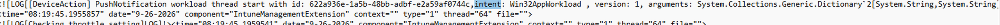

You assign a new Win32 app as Required in Intune. The device is online and ready, but the app doesn’t appear immediately. Nothing has necessarily failed. The Intune Management Extension (IME), may simply not have checked for the new assignment yet. Microsoft is addressing that wait time with faster Win32 app delivery. Intune now uses push notifications to prompt devices to check sooner after app changes, reducing the wait without requiring a new admin workflow.
I wanted to see that in action. I assigned a new app as Required, and within a couple of minutes, a push arrived for Win32AppWorkload. When I repeated the test, the capture showed exactly how it arrived: over IC3, with intent 2 selecting the Win32 app workload. The app assignments are still pulled from Intune. The push simply brings that check forward.
Microsoft has announced faster Win32 app delivery
The What’s new announcement, listed under service release 2609 for the week of 28 September 2026, says:
“Microsoft Intune now uses push notifications for admin-initiated and service-side changes to Win32 apps.”
This gives managed devices a way to check sooner after an app change, without a new admin workflow. It is broader than the separate ESP improvement post. The announcement describes reducing the wait before the device checks again, not installing instantly. It leaves the transport unnamed; the client capture in this article shows IC3.
Why a required app could be left waiting
An app check only sees the assignments available at that moment. An assignment made just afterward needs another check. In the IME 1.106.102.0 build investigated here, the required-app timer defaults to 60 minutes. Other triggers can run sooner, and the service can adjust that interval.

The IC3 push tells the IME what to check
The push arrives through IC3. Its NotificationIntent is 2, which selects Win32AppWorkload. It does not deliver the installer. The IME still contacts Intune, retrieves the current assignments, and works out which apps need to be installed.
That is the flow shown below: a required app assignment changes, an IC3 notification reaches the IME, and intent 2 selects the Win32 app check. The notification brings the check forward; it does not replace normal app processing.

The push brings faster Win32 app delivery
With a scheduled pull, the IME starts the conversation when its app check becomes due. In the tested flow, Intune sends the signal over IC3 first. The IME then asks for the app work that applies now. The assignments are still pulled; the notification changes when that pull starts.
The IME already had notification handlers. The announced improvement connects administrator and service-side Win32 app changes to that more responsive behavior. It does not replace the app engine or remove its scheduled checks.
Background: IC3 and Device Sync
In the Win32 apps and scripts section of my earlier IC3 article, I pointed to Win32AppWorkload as a practical use for the notification channel: start an app check before the next timer. The repeat test now shows it happening: IC3 delivered intent 2 and the Win32 workload ran. For background, the later Device Sync capture separately showed IC3 reaching the IME, while WNS still reached Windows MDM.

The transport and the workload are different parts
As background, the first improved Sync capture used WNS for both clients. In the later capture, the IME request used IC3 and Trouter. The workload selection could remain the same even though the delivery route changed. That comparison is separate from the IC3 app assignment flow tested here.
NotificationIntent selects the primary workload; SyncType can carry the DirectSync context, and AdditionalWorkloads can request other work. A Win32 app notification does not need to be a full Device Sync or also request scripts and remediations.
The original “PushNotification workload thread start” line identified the workload, not the transport. The repeat test supplies that missing detail: IC3 delivery with intent 2. The captures below show the notification arriving and the Win32 workload completing.
The assignment-to-app-check flow
The six steps below connect the changed assignment to the normal app engine. IC3 delivers the push at step 2, and intent 2 selects Win32AppWorkload at step 3. The original log and the monitor captures show these stages before the normal app check.

Following the notification into the faster Win32 app delivery
Step 1: Assign the Win32 app as Required
My test started with a new required-app assignment. That change exists in Intune, but the device still needs to retrieve it. The app-change notification gives the service a way to prompt that check.
This is the assignment-change scenario. The earlier Device Sync investigations started with a different action: an administrator pressing Sync.
Step 2: Deliver the push through IC3
IC3 delivers the notification over the IME’s configured Trouter connection. The listener passes its content into the existing device action handling. This is the receiving path captured in the required app retest.
The message identifies the requested workload. It does not need to include the installer, detection rules, or the full assignment. The normal Win32 app process retrieves those afterward.
Step 3: Read intent 2 and prepare the Win32 workload
Within a couple of minutes of the assignment, the push reached the IME. At 08:19:45 on 26 September, the log recorded the notification workload thread starting with intent: Win32AppWorkload.



That intent is the workload selector. In the notification payload, NotificationIntent value 2 maps to Win32AppWorkload; this log prints the readable name. The GUID is the notification identifier, not the ID of the newly assigned app.
The screenshot captures the dispatch stage, not an installation result. “A couple of minutes” is the observed assignment-to-notification interval in this test; the screenshot itself records the local dispatch time.
In the IME 1.106.102.0 code path, notification processing checks configuration and throttling, prepares the client context, and refreshes certificate, user-session, and service-location information as needed. Duplicate notification IDs can also be filtered when that capability is enabled.
IC3 delivers intent 2 to the IME
I repeated the required app test with the live monitor running. At 09:31:14.469, it recorded the incoming IC3 notification, displayed as DirectSync in the monitor, with intent 2. This is a separate capture from the 08:19:45 log above.

The timeline follows that notification into the IC3 / IME branch. Win32 apps completed, while the Windows MDM and MMP C branches have no recorded activity for this action. This view is about the Win32 workload, not a complete Device Sync.

Please note: The picture above shows the live, uncut view of what happens when you add a new App as required in Intune
From the notification to the faster Win32 app delivery
Step 4: Start the Win32 app-check path
With the message checked and the context ready, the Win32 intent can hand over to the normal app-check path. This notification handover does not need to wait for the required-app timer to become due.
To follow that handover in the logs, look for these subsequent entries. They are search markers for the next stage, not additional lines from the screenshot:
[Win32App] Win32AppWorkload will now call Win32AppAsync
Starting app check in
The app-check entry is written before the busy check. If app processing is already running, this attempt can stop; a notification does not guarantee a separate queued run. The normal workload coordination and throttling still apply.
Step 5: Retrieve the current app assignments
The app workload contacts Intune for the policies that apply to the relevant user and device. Outside ESP, this primary Win32 notification path reaches the normal required-app request. The notification starts the check; the response tells the app engine what work is available.
This is separate from the post-ESP app-check improvement. In the examined build, that ESP-completion path has its own 60-second delay and addresses the older available-app/required-app ordering. That fixed delay is not part of this notification handover.
Step 6: Evaluate and install eligible apps
The IME now follows its usual app processing. Detection can show that an app is already installed. Requirements, dependencies, and deadlines still apply. Required apps that qualify continue through content download, installation, and reporting. The check is not limited to one app named in the notification.
The scheduled route remains available too. Its required-app interval starts with a one-hour default in this build, and app responses can supply a different interval. The notification avoids waiting for that timer; it does not delete the timer or bypass the normal installation rules.

Following the faster Win32 app delivery in the device logs
A separate IC3 / Trouter capture from 26 September shows the same receiving path reaching the Win32 app check. The timestamps below belong to that additional log example, not to either required app test shown earlier.

This separate IC3 message does not carry the DirectSync marker or additional workload selections. It shows why delivery and workload selection are different parts: IC3 can deliver a Win32 workload request without also requesting scripts and remediations.
Keep the stages separate when reading the logs. A message reaching the dispatcher, an app check being entered, and an app finishing installation are different events. This capture shows the handover to the app check entry point, not an installation result.
The IME still pulls. It just does not have to wait.
The required app test puts the change into a familiar scenario. I assigned an app, and a notification arrived within a couple of minutes. The repeat test adds the missing link: IC3 delivered intent 2, Win32AppWorkload, and the existing app workload ran without waiting for its next scheduled pass.

Less waiting before the faster Win32 app delivery begins
The benefit is not a different installer or a shortcut around app requirements. It is less waiting before the IME asks Intune what changed. That can make a newly required app feel much more responsive, while leaving the familiar detection, download, installation, and reporting stages in place.
Connectivity, workload activity, requirements, deadlines, and installer results still affect delivery. The few-minute interval in this test is an observation, not a promised installation time for every device or assignment.
Microsoft rolls out Intune changes in phases, so validate the behavior in your environment. The useful change is simple: a new app assignment no longer has to rely only on the next scheduled check. The push brings the pull forward.